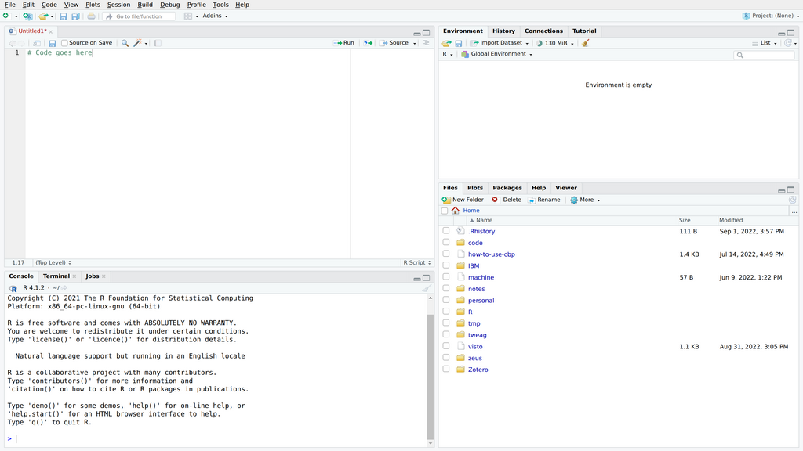
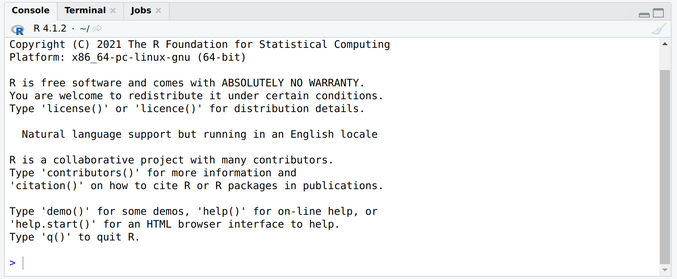
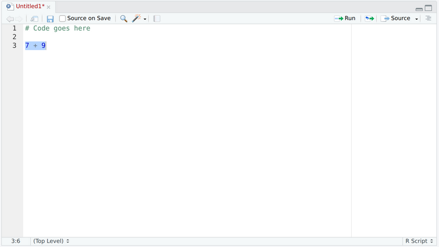
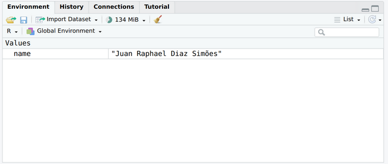
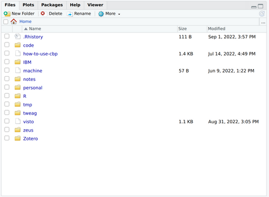

2.1.1 Basic R
There are many programming languages, and while most are capable of building any kind of software, each language tends to be better suited for some particular task. R is a programming language that is well adapted for statistical analysis. It makes easy to load data sets, do statistics with it, and create graphs from the results. This is the language we will use during this course.
In this first course, we will learn the basics about R and how it works. There will be many new concepts in this course, but don’t worry if you have problems undertanding all of them right now, since we will review each of these new concepts many times during the next courses, when we will put them to practice.
1 Installing R and RStudio
During the course, R and RStudio will already be installed, this is a reference in case you want to try it by yourself.
R is the program that runs the programming language. It is command-line based, which will be not familiar for most new users. Therefore, we will use RStudio, which gives a practical user interface to use R.
To install R, follow these steps:
- Go to https://cran.r-project.org/
- Under “Download and Install R”, click on the “Windows” link.
- Under “Subdirectories”, click on the “base” link.
- Click on the download link and save the file.
- Open the downloaded file.
- The R Setup Wizard will appear in a window. Follow the steps.
To install RStudio, follow these steps:
- Go to the RStudio download page and click Download for the free version.
- Click on the Windows 10/11 version and save it.
- Click on the download link and save the file.
- Open the downloaded file.
- The Setup Wizard will appear in a window. Follow the steps.
2 RStudio
RStudio is a graphical interface to interact with R. If you click on the “New File” button (white sheet of paper with green plus sign), you will see the following:

This UI has several panels. The first one, in the lower left, is the Console panel:

This is the place where you can evaluate code. For example, if you write 1+1 and press enter there, you will see the result 2.
The second panel is the Code one, located at the upper-left part of the screen:

If you select a block of code with the mouse, and click Run, the code will be evaluated in the console panel below.
In R, we can store values in variables. For example, in the console, you can store your own name in the name variable, by writing:
name <- "Juan Raphael Diaz Simões"You can see the variables that were defined, as well as their value, in the Environment pane, at the upper-right part of the UIl:

Finally, you can see the files that are available for manipulation at the lower-right Files panel:

3 Basic R
This section serves as a reference on how to use the most useful constructs in R. Make sure to come back to this page if you forget the syntax of the operations.
3.1 Variables
R can act like a basic calculator that you type commands in to. You can also use it like a more advanced scientific calculator and create variables that store information. In R, we assign values to variables using an arrow-looking function <- the assignment operator. For example, we can assign the value 2*3 to the variable x using the command:
> x <- 2*3To view the contents of any variable, just type its name, press enter, and the contents of that R object will be displayed:
> x
[1] 6What kind of information can you store in a variable? Anything! But the simplest kinds of data are strings, numbers and booleans:
> s <- "Some String"
> n <- 154.4
> b <- TRUE3.1.1 Exercise
Create:
- a variable named
имя, and save your first name in it - a variable named
летand save your age in it
3.2 Vectors
To create a vector, we can use the c() (combine) function. For example, to create a vector called myvector that has elements with values 8, 6, 9, 10, and 5, we type:
myvector <- c(8, 6, 9, 10, 5) # note: commas between each number!To see the contents of the variable myvector, we can just type its name and press enter:
> myvector
[1] 8 6 9 10 5The [1] is the index of the first element in the vector. We can extract any element of the vector by typing the vector name with the index of that element given in square brackets [...].
For example, to get the value of the 4th element in the vector myvector, we type:
> myvector[4]
[1] 10Vectors can also contain letters, such as those designating nucleic acids
my.seq <- c("A","T","C","G")They can also contain multi-letter strings:
my.oligos <- c("ATCGC","TTTCGC","CCCGCG","GGGCGC")3.2.1 Exercise
Create a variable named семья and save in it the names of your family members.
3.3 Tables
If we made a vector variable “nucleotides” containing the of a DNA molecule, we can use the table() function to produce a table variable that contains the number of bases with each possible nucleotides:
bases <- c("A", "T", "A", "A", "T", "C", "G", "C", "G")Now make the table
> table(bases)
bases
A C G T
3 2 2 23.4 Functions and arguments
Functions are operations that can be applied to different arguments. Functions in R usually require input variables (i.e.. objects) that are passed to them, which they then carry out some operation on. For example, the log10 function is passed a number, and it then calculates the log to the base 10 of that number:
> log10(100)
[1] 2There’s a more generic function, log, where we pass it not only a number to take the log of, but also the specific base of the logarithm. To take the log base 10 with the log function we do this
> log(100, base = 10)
[1] 2We can also take logs with other bases, such as 2:
> log(100, base = 2)
[1] 6.643856We can perform computations with R using objects such as scalars and vectors. For example, to calculate the average of the values in the vector myvector (i.e.. the average of 8, 6, 9, 10 and 5), we can use the mean() function:
> mean(myvector) # note: no " "
[1] 7.6We will been using built-in R functions such as mean(), length(), print(), plot(), etc.
3.4.1 Exercise
Create a variable named семья_лет and save in it the ages of your family members. Use the function mean on it to calculate the average age of your family.
Sum all the numbers from 1 to 1000. You can do it using the syntax 1:1000, which generates a vector with all numbers between 1 and 1000, and the function sum.
3.5 Writing your own functions
We can also create our own functions in R to do calculations that you want to carry out very often on different input data sets. For example, we can create a function to calculate the value of 20 plus square of some input number, in the code panel:
myfunction <- function(x) {
y <- x * x
return(20 + y)
}This function will calculate the square of a number x, and then add 20 to that value. The return() statement returns the calculated value. Once you have typed in this function, the function is then available for use. For example, we can use the function for different input numbers (e.g.. 10, 25):
> myfunction(10)
[1] 1203.5.1 Exercise
Write a function called sayHi that takes a parameter name, and returns the sentence Hi name!. For this, you will use the function paste, which can be used as follows: r > paste("A","B") [1] "A B" > paste("A","B",sep="") [1] "AB"
3.6 Loops
Finally, sometimes we want to execute an operation many times. The way to do it is using a for loop. For example, to print the numbers from 1 to 10 we can do:
for (x in 1:10) {
print(x)
}Or, to print every element of an array:
dice <- c(1, 2, 3, 4, 5, 6)
for (x in dice) {
print(x)
}3.6.1 Exercise
Create a vector with the name of four of your classmates, using the c(...) construction. Use a for loop to go through these names, an print the say hi sentence for each one of them, using the print function, and the sayHi function that was defined just above.
3.7 Conditionals
It is often useful to execute different operations depending on a condition. Let’s say we want to say if a number if big (larger than 10) or small (otherwise):
x <- 5
if (x > 10) {
print("Big!")
} else {
print("Small!")
}By changing the value of x, you can see either the first or the second piece of code being executed.
3.7.1 Exercise
Write a function маленький_или_большой which uses the code above to answer whether any number is small or big. Change it so it answers in Russian.